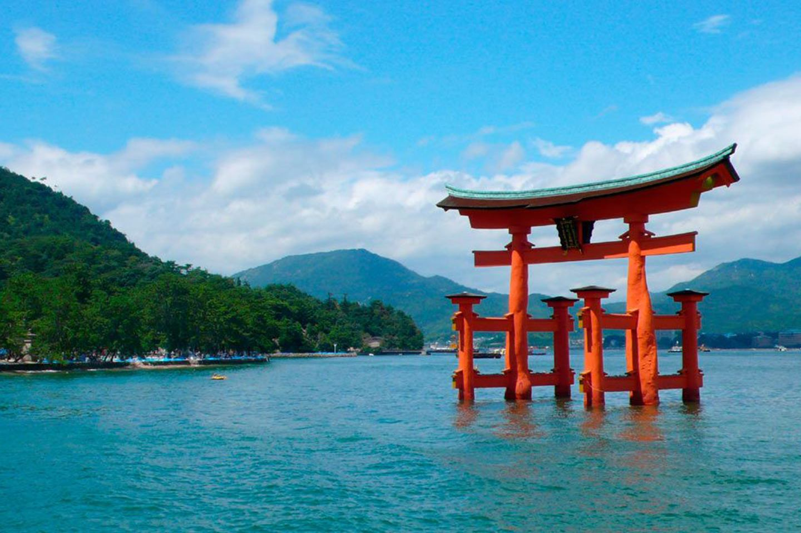

Volcán activo de 3776 metros de altura, el punto más alto del
país. Está en el centro de Japón a 120 kilómetros de Tokio, su
capital.
El nombre completo del monte es Fujisan: Fu, riqueza; Ji
, samurái; San, montaña. Fue inicialmente un lugar de
entrenamiento de estos guerreros del antiguo Japón; ahora es
zona de bases militares a los pies de la montaña.
El personal turístico tiene excursiones para ascender a pie o en
vehículo, pero estos solo llegan hasta la quinta estación, a 2300
metros de altura.
Isla Miyajima

Isla Itsukushima, mejor conocida como Isla Miyajima
Solo se puede llegar navegando. Desde Hiroshima se toma un ferry
que te dejará en este hermoso destino en escasos 20 minutos.
La vida en la isla gira en torno a Miyajima (isla de santuario)
que tiene en su entrada un inmenso torii, convertido en un
emblema para todo Japón. Es una de las imágenes que más se
repite en las guías turísticas.
La particularidad del santuario es que está construido sobre el
mar. Cuando el nivel del agua es bajo, puedes llegar caminado
al gran torii y es solo desde allí que se aprecia su inmensidad.
Cuando la marea es alta, parece estar flotando: un efecto sin
comparación.
Kanazawa: Marsh of Gold
Marsh of Gold
Kanazawa es una gran cuidad que, pese a su modernidad,
conserva y exhibe a los turistas sus primeros rasgos, sus
orígenes.
“Pantanos de oro”, como también es conocida esta urbe en la
costa oeste de Japón, tiene para sus visitantes el Castillo de
Kanazawa, fundado por el clan Maeda que estuvo en el poder
por 14 generaciones.
También podrás conocer cómo vivían los samuráis en el barrio
Nagamachi en los alrededores del castillo.
El estanque azul cerca de Hokkaido
Estanque de Hokkaido
Aunque parece natural, se trata de una presa construida para
proteger a la comunidad de los flujos de lodo de un volcán
cercano.
Su brillante azul no es directamente por el agua, sino el
resultado de la combinación de los rayos del sol y los minerales
de esta.
Algunos creen a primera vista que hay un bosque sumergido en
él por las ramas y troncos que sobresalen, imagen popular en
numerosas guías turísticas.
Castillo de Osaka
Castillo de Osaka
El Castillo de Osaka es un símbolo de poder e historia de la
ciudad. Sus 2 hectáreas de áreas verdes sirven para pasear,
practicar deportes, hacer ejercicios y relajarse lejos del ajetreo
de la ciudad.
Construido en 1583 por el poderoso general Toyotomi
Hideyoshi, fue demolido y rehecho después de varias guerras,
hasta ganar un aspecto y características muy modernas.
La torre principal del castillo tiene 13 pisos. Dentro puedes
encontrar museos, sala de convenciones y un espacio dedicado
al “señor de la guerra”: Toyotomi Hideyoshi.